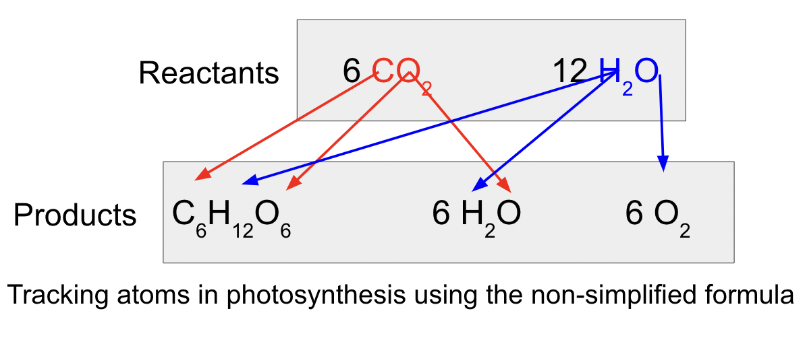
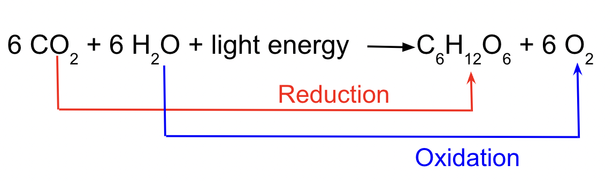
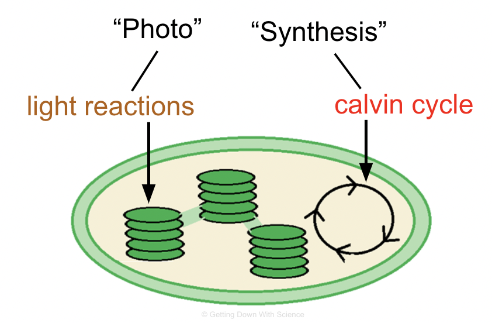

Photosynthesis Overview
Photosynthesis: the conversion of light energy to chemical energy
- Plants are autotrophs (more specifically photoautotrophs)
Autotrophs
- Organisms that produce their own food (organic molecules) from simple substances in their surroundings
- Ex. plants
Heterotrophs
- Organisms unable to make their own food so they live off of other organisms
- Ex. humans
Simplified Formula: 6 CO2 + 6 H2O + light energy → C6H12O6 + 6 O2

Photosynthesis splits H2O into H and O.
- Redox reaction: reaction involving complete or partial transfer of one or more electrons from one reactant to another
- Reduction: gaining electrons or H+ ions
- Oxidation: losing electrons or H+ ions
- Remember: "OIL RIG" of "LEO goes GER"

- In photosynthesis: the electrons are transferred with H+ (from split H2O) to CO2 reducing it to sugar
Stages of Photosynthesis
There are two stages to photosynthesis: the light reactions and the calvin cycle.

Extra Resources: